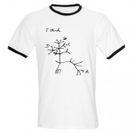

Society of Systematic Biologists
Home of Systematic Biology
Popular contentSyndicateCategories
User loginNavigationWho's onlineThere are currently 0 users and 2 guests online.
|
iPToL Postdoctoral Research Positions-Computational Phylogenetics/Phyloinformatics
Workshop on Comparative Genomics, Europe 2010
24 January - 5 February 2010 Application Deadline: 1 October 2009 http://workshop.molecularevolution.org/ Michael P. Cummings and Scott A. Handley, Co-Directors The Workshop on Comparative Genomics consists of a series of lectures, demonstrations and computer laboratories that cover various aspects of comparative genomics. Faculty are chosen exclusively for their effectiveness in teaching theory and practice in comparative genomics. Included among the faculty are developers and other experts in the use of computer programs and packages such as Ensembl, Galaxy, and Species Assignment Package who provide demonstrations and consultations. The course is designed for established investigators, postdoctoral scholars, and advanced graduate students. Scientists with strong interests in the uses of short-read sequence data, analytical methods, comparative structure of genomes, SNP detection and analysis, CNV, genome visualization tools and related areas are encouraged to apply for admission. Lectures and computer laboratories total ~90 hours of scheduled instruction. Admission is limited and highly competitive, with admissions decisions determined by an international committee. Topics to be covered include:
2010 Fee: 2250 USD. Fee include opening reception and mid-course dinner, but does not include other meals or housing. Special discounted pricing has been arranged for hotels, pensions and hostels. For more information and online application see the Workshop web site http://workshop.molecularevolution.org/ The Workshop on Molecular Evolution is also being offered immediately before the Workshop on Comparative Genomics. Workshop on Molecular Evolution, Europe 2010
10 - 22 January 2010, individual research session 22 - 29 January 2010 Application Deadline: 1 October 2009 http://workshop.molecularevolution.org/ Michael P. Cummings and Scott A. Handley, Co-Directors The Workshop on Molecular Evolution has been the finest course on the subject since first offered in 1988 in Woods Hole, USA. The Workshop will again be offerred in Europe, in January 2010. The Workshop consists of a series of lectures, demonstrations and computer laboratories that cover various aspects of molecular evolution. Faculty are chosen exclusively for their effectiveness in teaching theory and practice in molecular evolution. Included among the faculty are developers and other experts in the use of computer programs and packages such as BLAST, BEAST, Clustal W and Clustal X, FASTA, FigTree, Genealogical Sorting Index, GARLI, LAMARC, MAFFT, Migrate-N, MrBayes, PAML, PAUP*, and SeaView who provide demonstrations and consultations. The course is designed for established investigators, postdoctoral scholars, and advanced graduate students with prior experience in molecular evolution and related fields. Scientists with strong interests in molecular evolution, phylogenetics, population genetics, and related fields are encouraged to apply for admission. Scheduled � lectures and computer laboratories total ~90 hours of instruction. An optional all-computer laboratory of 54+ hours of independent work with guidance and consultation of some faculty and teaching assistants is offered during the third week. Admission is limited and highly competitive, with admissions decisions determined by an international Topics to be covered include:
2010 Fee: 1800 USD, plus an additional 750 USD for the highly recommended, but optional, third week of all-computer laboratory for work on your own data with guidance and consultation of some faculty and teaching assistants. Fees include opening reception and mid-course dinner, � but do not include other meals or housing. Special discounted pricing has been arranged for hotels, pensions and hostels. For more information and online application see the Workshop web site http://workshop.molecularevolution.org/ The Workshop on Comparative Genomics is also being offered immediately following the Workshop on Molecular Evolution. Post-Doctoral Research Fellowship in Mysticete Comparative Morphology and PhylogenySeeking a Postdoctoral Fellow to participate in an ongoing collaborative research project (A. Berta, T.A. Dem�©r�©, J. Gatesy) on the evolution of filter feeding in mysticete cetaceans and the phylogenetic position and morphological diversity of stem edentulous baleen whales (i.e., "cetotheres"). This is a full time research position to collect, document, and analyze morphological characters (qualitative and quantitative, osteological and soft anatomical) for fossil and modern mysticetes, as well as sister and outgroup taxa. AGM Minutes 2009The minutes and reports are available here Evolution 2009 updatesEvolution 2009 is drawing close, and there are a few logistic updates. It will be possible to register to attend at any time, so walk-ins are fine. Meanwhile, if you plan to use conference bussing, on-campus housing, or to subscribe to a meal plan, please do so on or before May 24. Thanks, and we look forward to seeing you all in Moscow! 57(6) December 2008
Data sets and supplementary material for articles this issue can be downloaded here. Files are (typically) in NEXUS, Word, or HTML formats. Note that the authors may also have deposited their data in GenBank and TreeBASE, or have additional data on their own web sites.
By Roderic Page at 2009-05-21 15:15 | read more
Evolver ZoneT. Ryan Gregory has created Evolver Zone, a resource for students, teachers, and researchers with an interest in evolution. The site contains links to multimedia (including a a beginnerââ?¬â?¢s guide to making a phylogenetic tree), software, databases, professional societies, journals, and books, and is supported by sales from it's EZ Store. Call for SSB Symposia, 2010 Meetings, Portland, OregonEvolution Meeting The Society of Systematic Biologists invites proposals for symposia at the 2010 Evolution meeting to be held in Portland, Oregon, from 25-29 June 2010. The meeting will be held jointly with the American Society of Naturalists and the Society for the Study of Evolution, and our host is Portland State University. Proposals should include (1) a descriptive title, (2) one or two paragraphs explaining the purpose of the symposium and its relevance to systematics, (3) a list of presentations including proposed speakers, their institutions or affiliations, and their presentation titles, (4) an indication of whether the speakers have been invited and whether they have agreed to participate, and (5) the proposed length of each talk. Symposia are restricted to half-day sessions. The society is particularly interested in symposia whose topics do not overlap with those from previous meetings (see SSB website for past symposia), that introduce new ideas or synthesize important concepts, or those that are particularly good examples of the analysis of empirical data. Proposals that unite systematics with other fields are also desirable. We encourage participation from young investigators and others typically under-represented in symposia. Mentoring at Evolution 2009
We are pleased to announce that the Evolution Tri-Societies Mentoring Program is now up and running in collaboration with MentorNet! This free program is available to ALL members of ASN, SSB and SSE. MentorNet is an award-winning mentoring organization that matches mentors with compatible prot�©g�©s for an eight-month pairing, which includes weekly or biweekly e-mail discussion prompts to foster supportive mentoring relationships. |
Latest issue
EVOLDIRphylobabble.orgiPhyloPhyloseminarSystematics AssociationNESCentThe Genealogical World of Phylogenetic NetworksCiteULike PhylogenyEvolutionary Bioinformatics
CladisticsBMC Evolutionary Biology
Molecular Biology and Evolution |
 Follow us on Twitter
Follow us on Twitter Find us on Facebook
Find us on Facebook